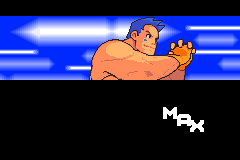
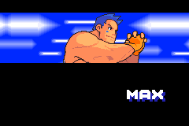

Advance Wars (USA) (Rev 1)
Flash 512K Save Format Mapped (Family Spec) 💾 MultiBoot 🎮 4P Link
Cartridge Identity
- Game Code
AWRE(FamilyAWR)- Header Title
ADVANCEWARS- Maker / Revision
01/ rev1- ROM Size
- 4.0 MiB (4,194,304 B)
- Save Media
Flash 512K- SHA-256
4dd4bd22441f29b22ca5af554f30bf0eb7d2b1a5daff0e2cd071a43e11383305- Engine / SDK Group
comm-009(51 families)
Screenshots


Link Cable & Multiplayer Communications
This title contains detected communication capabilities: 💾 MultiBoot 🎮 4P Link.
Detailed protocol specifications, SIO registers, Joybus commands, and MultiBoot sequences are documented in the Link & Multiplayer Reference.
- Multi-Player SIO (4P)
- 16-bit ring network · SIOCNT (
0x04000128) literals:0x02fe90,0x02ff44,0x02ffa0· SIODATA32/SIOMULTI0 (0x04000120) literals:0x0301f4,0x069c68,0x069ccc - Single-Cart MultiBoot
- Single-Cartridge MultiBoot (Download Play) client/server handler · Thumb SWI 0x25 (
0xDF25):0x0796e2,0x0d5498,0x1dc182,0x1e2f8e
Battery Save Format Specification (Family Shared)
This release shares its save architecture with canonical family reference Advance Wars (Europe) (En,Fr,De,Es) (Family
AWR).
Open Family Save Format Spec (AWRP)Download save-format.json
- Canonical Specification
AWRP· 13 mapped fields · 2 verified checksum(s) · Confidence: MEDIUM- gbakit Built-In Support
- Built-in (AWRP)
gbakit save verify AWRP save.sav
gbakit save decode AWRP save.sav
gbakit save fix AWRP damaged.sav -o repaired.savObserved Battery Save Layout
- Fill Byte & Active Size
0xFFfill · 1,161–1,161 / 65,536 B active (entropy 0.38 bits/B)- Active Offset Ranges
0xF000–0xF421,0xF425,0xF429,0xF42D,0xF431,0xF435,0xF439,0xF43D, +8 more (73 total)- ASCII Magic / Headers
wars,Advance- Observed Variable Regions
- 0 bytes across 0 spans: None
- Candidate Checksum/Counter Spans
- None
Text, Fonts & Scene Data
- Primary Text Encoding
- Plain ASCII (uncompressed) (
5,305ASCII strings ·29Shift-JIS runs ·4LZ77 ASCII blocks) - Font & VWF Indicators
- VWF Width Table 1bpp Font · BIOS SWIs: BitUnPack
0x10:20· LZ770x11/12:40· Huffman0x13:8· RLE0x14/15:13 - Scene & Packaging
36ROM pointer tables (≥32 entries,5≥200) ·0relativeu32TOCs ·238OAM metasprite hits
Verified Deep-Dive Offsets & Notes (Intelligent Systems / Nintendo · Turn-Based Strategy) —
see the GBA Text & Fonts Guide for VWF, charmap, and
gbakit text workflows.
- Verified Text Encoding
- Plain ASCII null-terminated strings (with 0x0D=NL, 0x0F=end) + residual Shift-JIS Japanese bank
- String Pointer Table Entry
0x27D434- Sample String Offset
0x28072C- Asset Pointer Table
0x3AE4EC(3,079 entries)
Hardware MMIO Subsystems
ppu_display0x8010574,0x801a420,0x801b820save_bus_sram_flash0x8079708,0x8079be8,0x8079d48,0x8079f1c
Regional Variants & Revisions (Family AWR)
- Advance Wars (Europe) (En,Fr,De,Es) (
AWRP, 8 MiB) - Advance Wars (Europe) (En,Fr,De,Es) (Virtual Console) (
AWRP, 8 MiB) - Advance Wars (USA) (
AWRE, 4 MiB) - Advance Wars (USA) (Virtual Console) (
AWRE, 4 MiB) - Lu-Hai-Kong Dazhan (China) (Proto) (
AWRC, 8 MiB)